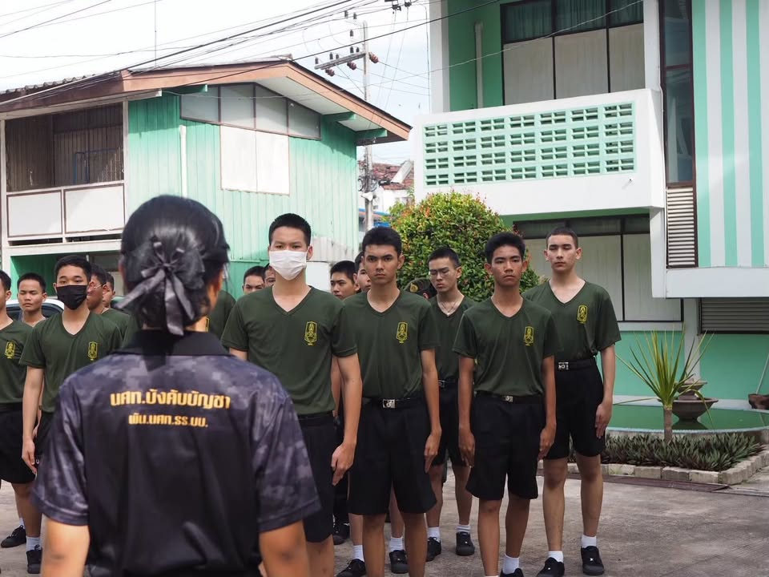
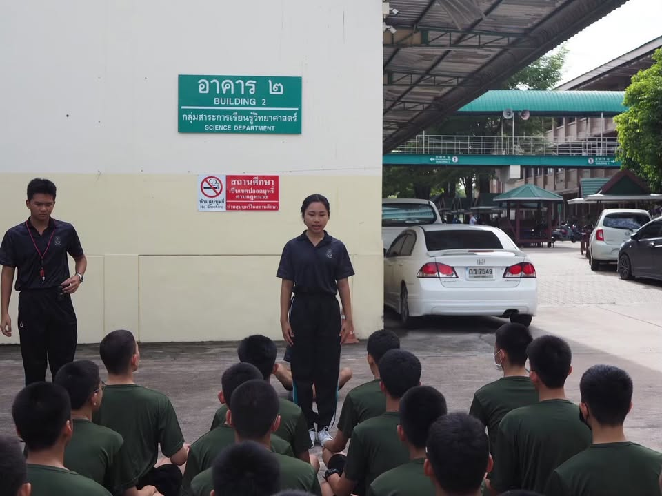
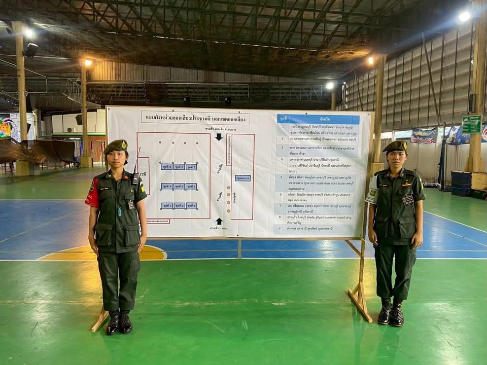
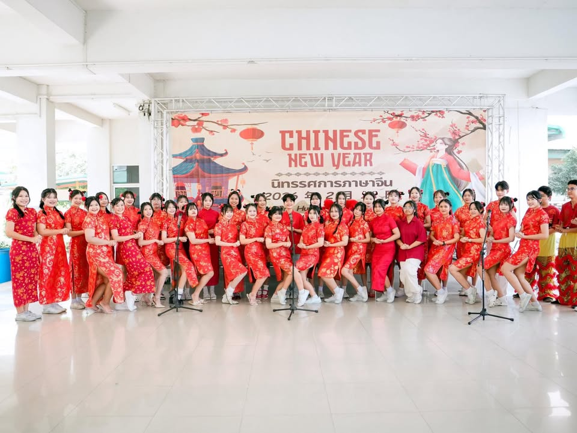

• มีทักษะการถ่ายทอดที่ช่วยย่อยเนื้อหาซับซ้อนให้เข้าใจง่ายและกระตุ้นการคิดวิเคราะห์
• ทักษะการฟังและจิตวิทยาการเข้าใจเด็กเพื่อดูแลผู้เรียนที่มีความแตกต่างกัน
• ทักษะการบริหารจัดการชั้นเรียนให้เป็นพื้นที่ปลอดภัยน่าเรียนรู้

• มีความสามารถในการวางแผน บริหารจัดการทีม และการแก้ปัญหาเฉพาะหน้า
• ยินดีรับฟังความคิดเห็นของสมาชิกในทีมเพื่อบรรลุเป้าหมายร่วมกัน
• สามารถสร้างแรงบันดาลใจและประสานความร่วมมือในองค์กรหรือกลุ่มกิจกรรมได้ดี

• มีจิตสาธารณะ พร้อมเสียสละเวลาเพื่อประโยชน์ส่วนรวมและช่วยเหลือสังคม
• เข้าร่วมกิจกรรมค่ายอาสา โครงการบำเพ็ญประโยชน์อย่างสม่ำเสมอ
• สามารถทำงานร่วมกับผู้คนหลากหลายวัยและบริบทได้อย่างเข้ากันได้ดี

• มีความรู้ความสามารถด้านภาษาจีนทั้งการฟัง พูด อ่าน และเขียน
• สามารถใช้ภาษาจีนในการสื่อสาร การนำเสนอ และการประสานงานเบื้องต้นถึงระดับสูง
• มีความเข้าใจในวัฒนธรรมจีนเพื่อการสื่อสารที่เข้าถึงบริบทอย่างแท้จริง
